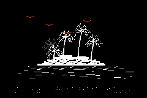
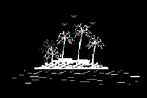

AN EXPERIMENTAL FIRMWARE FOR M-VAVE FM-1
Hello,
traveller.
Welcome to ReVo. An experimental soundscape generator, and a fertile ground for sonic exploration.
There are two paths waiting for you. Choose an island. Take your time. Let it surprise you.
01 / A LIVING ISLAND
Bioma

A synthesized ecosystem. Natural voices listen, answer and find their own way.
02 / TWO MOVING CURRENTSAtolls

Guide two sea currents. Shape their movement, their force and the ways they meet.
One instrument / two worlds
Leave room
for discovery.
Bioma greets you when ReVo wakes up. Hold HOME, choose Machine and press SEL to travel between Bioma and Atolls.
Each island is its own machine. Learn a few gestures, then follow what you hear.